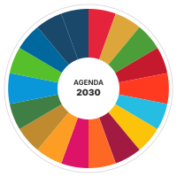
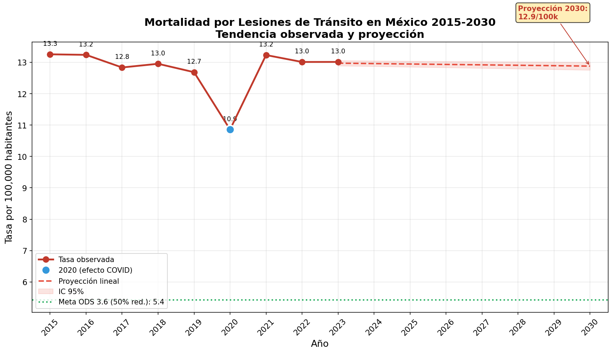
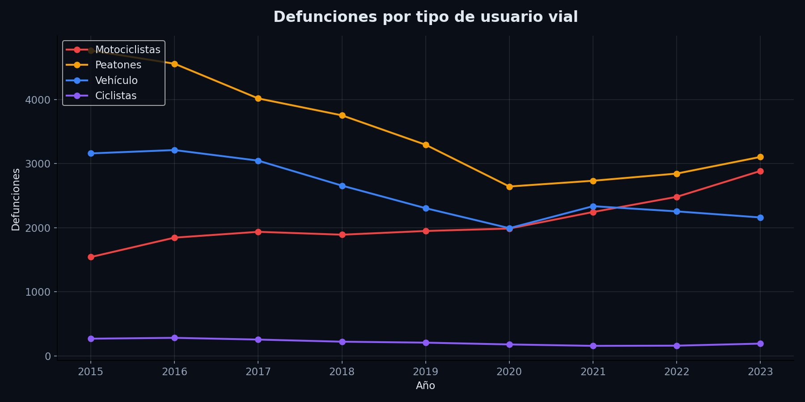

Monitoreo independiente de datos, análisis y evidencia para políticas públicas que salvan vidas en México.
De 1,541 muertes en 2015 a 2,885 en 2023. Un aumento del 87% en 8 años. La emergencia que nadie está atendiendo.


Análisis de microdatos INEGI 2015-2023 con datos nacionales, estatales, por género y grupo de edad.
Ver análisis completo e infografíasExplora los datos de mortalidad y morbilidad vial en México. Filtra por estado, año y tipo de usuario.
🚧 Dashboard interactivo completo — Próximamente
Mientras tanto, explora los datos del reporte de motociclistas arriba.
Análisis de tendencias mediante tasas estandarizadas por edad a nivel nacional y subnacional.
Descargar PDFUna emergencia que se acelera. Mensajes clave, datos y recomendaciones de política pública.
Descargar PDFTasas estandarizadas por edad, tendencias log-lineales y comparativo internacional.
Descargar PDF16 gráficas de alta resolución: tendencias, rankings estatales, comparativos y proyecciones.
Ver todas las infografíasRecibe análisis, datos y policy briefs directamente en tu correo. Sin spam, solo evidencia.
También puedes escribirnos directamente a: enikuaha@gmail.com
Tus datos están protegidos. Puedes cancelar en cualquier momento.
Al hacer clic se abrirá tu correo electrónico para enviarnos tu solicitud.
El Observatorio de Seguridad Vial es una iniciativa independiente de monitoreo y análisis de datos sobre mortalidad y morbilidad vial en México, con enfoque en evidencia para políticas públicas.
Dr. Arturo Cervantes Trejo
Académico, Universidad Anáhuac
Investigador independiente
Presidente, ANASEVI
Especialista en epidemiología de lesiones, seguridad vial, economía de la salud y prevención de violencia. Harvard T.H. Chan School of Public Health.